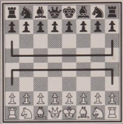
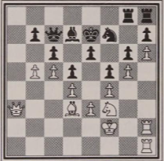

Fonte:Play Winning Chess, Yasser Seirawan
Uma vantagem em peças em geral ou em uma determinada área do tabuleiro.
Uma vantagem em rapidez com relação as turnos em colocar peças num local particular do tabuleiro
Uma vantagem em controle de território.
"squeezing you opponent to death."

A contagem é feita pelas casas de alcance das peças em território inimigo. Casas de controle repetido são contadas tantas vezes quantas peças controlá-las. Vejamos um exemplo.

Usando a situação do jogo acima como exemplo, pode-se contar o espaço das brancas e das pretas no tabuleiro.
Para brancas, os peões controlam 11 casas(a6, b6, c6, d6, c5, e5, g5, f6, h6, g7), o Cavalo controla 2 casas(e5 e g5),
o Bispo controla 2 casas(b5 e f5), a Torre de h2 controla 2 casas(h5 e h6) e a Dama controla 5 casas(de a5 à a8 e, na diagonal, c5).
Total para as brancas, 22 casas de influência em território das pretas.
Para as pretas, os peões controlam 4 casas(c4, e4(2x), g4) e essas são as casas que as pretas controla do terreno das brancas. As outras peças,
recuadas e atrás de seus peões só tem influência sobre o seu próprio território.
Total para as pretas: 4 casas.
As brancas estão em grande vantagem.
...